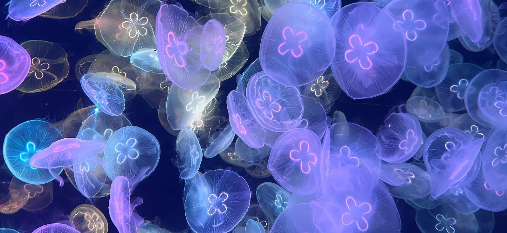

The first thing I noticed was that when the mouse moved, the entire 3D scene was Parallax Movement based on direction, enhancing the sense of space and immersion. This Dynamic Visual Feedback immediately caught my attention and made me realize that this was a highly interactive experience.
Camera & Cursor Interaction
(1) Mouse Movement: 3D scenes are parallax movement based on the
direction of mouse movement, enhancing the sense of space.
(2) When the mouse moves, a round white cursor indicator appears that
follows the cursor.
Scroll-triggered Scene Transition
(1) Scroll Down: The current 3D scene floats upward to switch to the
next page.
(2) Scroll Up: The current 3D scene floats downward to return to the
previous page.
Hover Effects & Microinteractions
(1) Hovering over a 3D scene triggers an elevation animation that
provides interactive feedback.
(2) Buttons expand into text boxes.
(3) Buttons change color and fonts animate.
(4) Hovering over "X" triggers a rotation.
(5) Hovering over titles shows a dynamic thumbnail.
(6) Hovering bottom-right icon opens global navigation.
(7) Hovering a button causes subtle scaling.
Interactive 3D Objects
(1) Control game scenes via mouse drag.
(2) Goals trigger reward animations and scoreboard updates.
(3) Click icons for bounce navigation.
(4) Click mouse or screen to simulate shutdown.
(5) Click sandbag → swings.
(6) Click pan → flips the egg.
Scrolling-triggered Interaction
(1) Scroll moves page vertically.
(2) One line of text moves horizontally.
(3) On “Team Member” screen: scrolling causes horizontal movement of
member photos.
Dynamic Content Replacement
(1) On “luni life” screen: click thumbnail to switch background and show text explanation.
I spent the most time in the Interactive 3D Objects section, especially the Interactive objects that can be triggered by mouse clicks. Things like Game-like Interaction for motion scenes and State Change for 3D objects had me testing and retesting to see how the interaction worked.
(1) Use high Interactivity to let users actively explore.
(2) Hover feedback and clickable elements prompt users to
participate.
(3) Animation and animated transitions provide visual guidance to
ensure coherent information.
(1) Scroll-driven navigation reveals new content dynamically,
encouraging ongoing interaction.
(2) Microinteractions and hover effects provide feedback, reinforcing
active engagement.
(3) Gamified elements, like scoring in sports mini-scenes, add a
playful, repeatable aspect.
(4) Deep navigation structures, such as expandable content and app
previews, suggest progressive exploration rather than a one-time
visit.